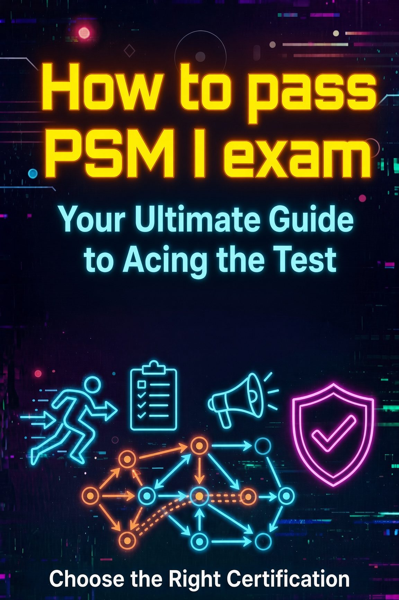
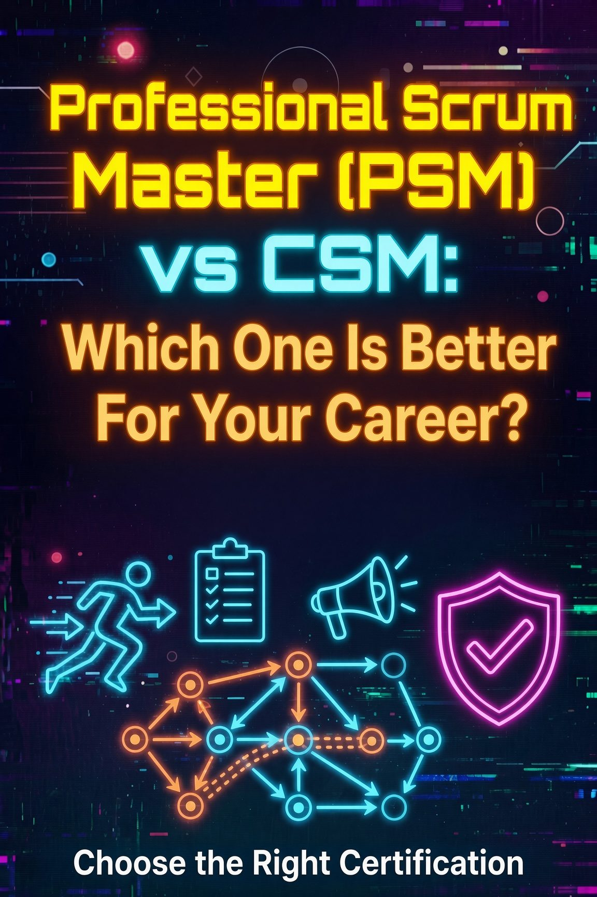
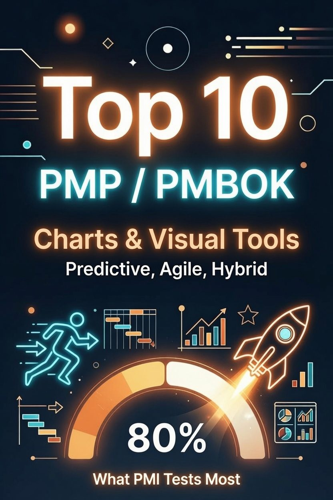
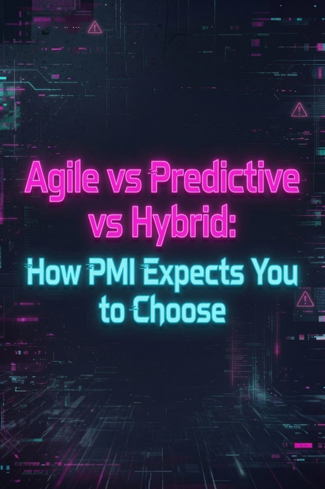
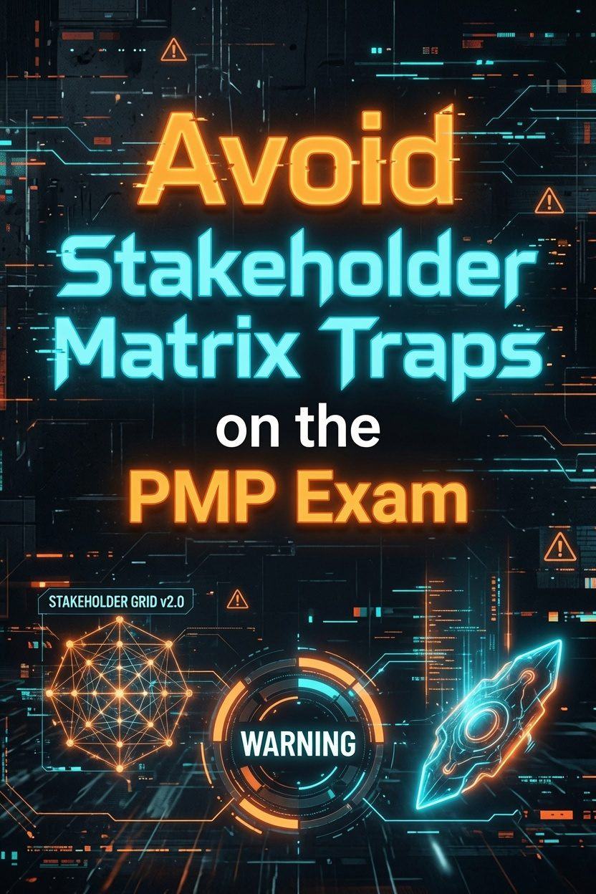
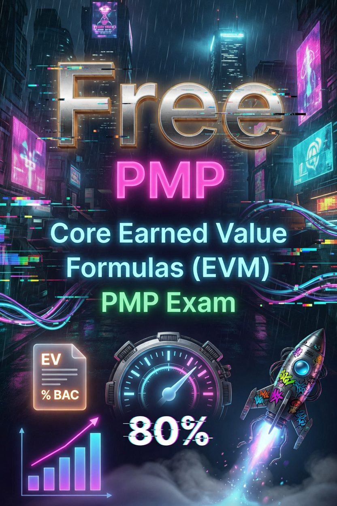

How to Pass the PSM I Exam: A Complete Study Guide
Pass the PSM I with a proven study plan. Learn the exam format, the 2020 Scrum Guide concepts that matter most, question types, and the mistakes that cost people points.
Read the Study Guide →Your guide to better sysops
Practical project management resources, PMP exam prep, and career guides for aspiring project managers.
0 articles

Pass the PSM I with a proven study plan. Learn the exam format, the 2020 Scrum Guide concepts that matter most, question types, and the mistakes that cost people points.
Read the Study Guide →
PSM I vs CSM compared: cost, course requirements, exam difficulty, renewal, and employer recognition. See which Scrum Master certification fits your situation.
Compare the Certifications →
Learn the RACI matrix in 5 steps: Responsible, Accountable, Consulted, Informed. Includes a sample matrix, common mistakes, and the PMP exam traps PMI tests.
Build the Matrix →
CPM vs PERT explained with the same project solved both ways. Learn the forward and backward pass, float, and the three-point estimate formula the PMP exam tests.
Compare the Methods →
10 PMP chart flashcards and an interactive quiz covering burndown, burnup, Gantt, WBS, control charts, Kanban, network diagrams, and more — PMBOK 8 verified definitions and exam tells.
Study the Cards →
Learn the differences between predictive, agile, and hybrid approaches under PMBOK 8, how PMI's decision framework works, and 10 scenario examples that show you how to apply it.
Compare the Approaches →
Burndown and burnup charts look similar but tell different stories. Learn the key difference, when to use each, and how scope changes affect what you see.
Compare the Charts →
The power/interest grid looks easy until you misread a quadrant. Learn the #1 exam trap and how to categorize stakeholders for correct answers.
Master the Grid →PMBOK 8 condensed project management from 12 principles to 6. Learn each principle, how the exam tests it, and how to eliminate wrong answers by principle mismatch.
Master the Principles →
PMI gathered 48,000 data points to build the 8th Edition. Everything that changed — 12 principles to 6, Process Groups return as Focus Areas, 7 new Performance Domains, 40 embedded processes.
See the Changes →
Master the PMP EVM formulas with 10 practice questions and step-by-step solutions covering SV, CV, SPI, CPI, EAC, ETC, VAC, and TCPI. Includes a complete formula reference table.
Learn the Formulas →
Test your PMP exam readiness with 20 practice questions covering the People, Process, and Business Environment domains. Includes detailed explanations for each answer.
Take the Test →